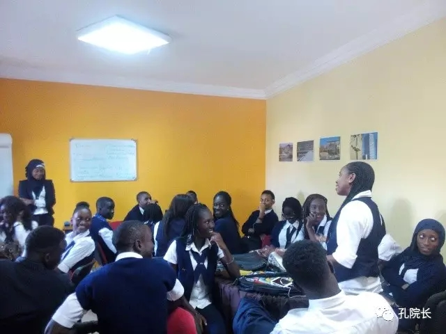

每日一篇——文化活动/达喀尔高等商学院 文化推广小助手 中文俱乐部【上】
 393
393
来源：原创 作者：孟祥宇
2015年9月24日，我飞抵西非之角塞内加尔，作为国家汉办赴达喀尔高等商学院首任公派汉语教师，开启了自己两年的汉推之路。一个人，一所学校，八个班，近两百学生……我所要做的，不仅仅是教汉语。
语言，是沟通的媒介，更是文化的载体。因此，我的工作既包括了语言教学，又脱离不了文化推广。汉语教学，我的阵地在教室；文化推广，我的阵地在中文俱乐部。
达喀尔高等商学院是西非一所著名的私立商学院，成立于1992年。二十五年的发展历程，二十五年与世界各地名校的广泛对接，形成了该校重视学生自我发展、鼓励学生自我管理的良好风气。在这种气氛影响下，学生俱乐部成为了校园内一种常见的学生兴趣组织。在我的班里，就有体育俱乐部主席、慈善俱乐部主席和英语俱乐部主席。既然如此，我为何不鼓励学生成立中文俱乐部呢？有了这样的想法，我和外方秘书以及学生们进行了沟通，大家一致赞成。很快，学院亚非中心给所有选中文课的学生和我发了邮件，就中文俱乐部管理团队选举进行了说明。
【成立俱乐部】
在规定的选举时间，学生们陆续赶到。达喀尔高等商学院的学生俱乐部组织与国内的学生会组织在结构上大同小异，有主席、财务、外联、活动组织等职位，此外，还有外事联络。所有的岗位都有正副职。此次选举是从具体的职能岗位开始，最后选主席。
选举开始后，每一个岗位学生们都积极对待，积极自荐，并就竞选做个人阐述。为了照顾我，大家全程用英文，当然也会穿插自己的中文展示。当每一位竞选人阐述完自己的想法后，就被要求去教室外等待，其他同学则在室内举手表决，依票数多少决定正副职的人选。选举很公正，也很顺利，每个人都有机会。当然，我不参与投票。
选举大概持续了一个多小时。中文俱乐部管理团队确认后，我们又对接下来的每周例行活动、中文日、中文周的内容进行了头脑风暴，做了大概的规划。

俱乐部选举现场
【俱乐部例行活动举例】
1. 日常宣传
俱乐部能健康存在，离不开外界的广泛关注。成立之初，俱乐部主席、副主席、财务官和我多次到各个教室进行宣传。在高等商学院，学生们要是有事情要宣传，就得利用上课的时间挨个串教室，我就遇到过很多次。现在，却是我们要进去宣传自己的中文俱乐部了。副主席首先进了教室，跟教授解释了一下，征得他的同意后，我们就都进去了。两个负责的学生先用中文了介绍了自己，然后就开始用法语宣传我们的俱乐部。学生们挺感兴趣，有一位成年学生还告诉我她去年刚去了内蒙古和北京，很喜欢中国。因为占用的是他们的上课时间，我们未作长时间逗留就离开了。一次次进门，一间间教室，多多的宣传，让其他学生多多了解中文俱乐部。
2. 小活动
俱乐部的日常活动，多在每周六上午，不占用正常上课时间，每次都是一两个小时。这一两个小时的时间，学习在其次，传递与中文相伴的欢乐是主要的。比如，唱唱中文歌，游戏游戏，座谈座谈，再比如，学生自己讲一讲。
说起唱歌，中华人民共和国国歌我是必教。非洲学生节奏感强，善歌唱。看个视频，听个音频，很快他们就能掌握旋律，我要做的就是一句一句地给他们解释歌词的意思。因为有着相似的被奴役过的历史，学生们对中国国歌的理解很深刻。更深地了解彼此，才能更好地理解彼此。
学生们唱中国国歌
至于游戏，“萝卜蹲”确实挺适合学中文的学生。萝卜在非洲很常见，学生又可以在游戏的过程中了解颜色的说法，还能锻炼嘴皮子。几组学生玩到最后，很容易就能把游戏中的话说的很溜。
俱乐部游戏时间
座谈呢，就得找学生能产生共鸣的客人，比如在中国留学的学生。在达喀尔有一些双语学校，这些学校的毕业生会去国外读大学，包括中国。我的学生，很多毕业于这样的双语学校，自然有在中国留学的同学。曾经，我们请来一位客人，穆罕默德，是东北财经大学的留学生。在活动现场，他用自己的亲身经历描述在中国留学的日子，自然能吸引昔日同窗。由他来介绍中国的高等教育，比我的说教可有意思多了。
至于学生自己讲一讲，就得找点儿有意思的点了。春节期间，讲点儿传统文化，就是不错的点，比如十二生肖。活动之前，俱乐部副主席夏荷爱搜集了一些十二生肖的内容，加之之前上课的时候我也给他们讲过相关知识，因此内容准备还算充分。活动时，对照着投影内容，相关属相的学生分别给大家做着介绍，我呢，则给予更正和补充。让学生了解属相，最大的困难是让他们理解中国是个农业国家，对家畜有着天然的喜爱。再一个就是关于对龙的理解。我的方法还是从农业入手，让他们意识到水对农业的重要性，而中国的龙是水龙，不是西方社会传说中邪恶的火龙。这么一讲，学生们对中国人尊崇龙这一现象也就茅塞顿开了。
作者介绍：
孟祥宇，副研究员，青岛远洋船员职业学院教师，目前以国家汉办公派教师身份在达喀尔高等商学院从事汉语教学与文化推广工作。